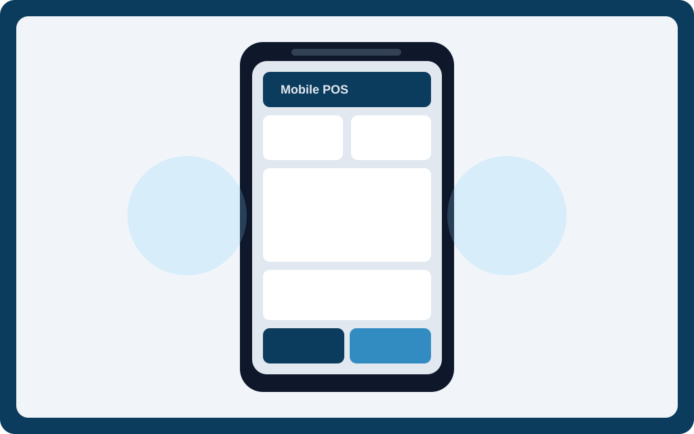

VMJAMTECH VPOS
Mobile POS & Field Operations
Designed for cashier lane, delivery rider, and barangay route workflows. Works with offline queueing, sync, shift control, and thermal printing.
Offline-FirstQueue + Sync
PIN LockFast Access
TransfersFULL/EMPTY Tracking
ReceiptsPrinter Ready
